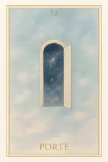

Famille 9 – Sia (Planète inconnue)
Carte 9 – Nuit
Mots-clés : nuit spirituelle, renaissance intérieure, transformation de l’âme, conscience universelle
Chiffre caché : 90
Lecture inversée : 0 → 9
Divinité principale : Sia
Planète secondaire : Soleil
Divinité secondaire : Râ
Interprétation de la carte 9 : Nuit (droite)
Lecture intuitive rapide
L’âme n’est plus rien que présence diffuse dans un espace sans forme. Elle n’a plus de visage, plus de nom, plus de passé. Elle flotte dans une nuit cosmique où tout est silence, totalité, accueil sans réponse. La Planète Inconnue ne donne aucun repère. Sia n’enseigne pas : elle absorbe doucement. L’âme ne s’abandonne pas — elle cesse d’avoir à le faire.
1. Caractère de la personne
L’âme cesse de se reconnaître comme “quelque chose”. Elle n’est plus qu’un souffle, une trace vibrante dans l’espace sans forme.
2. Plan affectif
Il n’y a plus de lien à libérer, car il n’y a plus de “soi”. Tout attachement s’est fondu dans l’obscurité paisible.
5. Plan spirituel
Spirituellement, NUIT est l’entrée dans la conscience totale. Sia absorbe sans question, et l’âme se laisse glisser dans le mystère qui n’a plus besoin d’être nommé.
Carte 9 : Nuit (inversée)
1. Caractère de la personne
L’âme résiste à sa disparition. Elle tente encore de retenir un nom, une mémoire, un contour.
2. Plan affectif
L’âme cherche encore un lien, une présence, refusant de se dissoudre dans l’invisible.
5. Plan spirituel
L’âme rejette la totalité, et se raccroche à une identité passée au lieu de se laisser engloutir dans la paix noire de Sia.
Résumé de la carte 9 : Nuit
NUIT est l’entrée dans l’inconnu absolu. C’est le silence après toutes les compréhensions, la fin sans fin, le moment où l’âme devient le Tout sans plus avoir à se distinguer.
À l’endroit, elle glisse dans Sia.
À l’envers, elle résiste au vide parfait.
Carte 18 – Etoile
Mots-clés : : lumière dans l’obscurité, espoir spirituel, renaissance de l’âme, message de clarté
Chiffre caché : 99
Lecture inversée : 9 → 9
Divinité principale : Sia
Planète secondaire : Terre
Divinité secondaire : Geb
Interprétation de la carte 18 : Etoile (droite)
Lecture intuitive rapide
L’âme est encore plongée dans la nuit. Mais elle perçoit une lumière, lointaine, stable, douce. Ce n’est pas un appel, ni une destination. C’est une étoile. Un point de clarté dans l’invisible, une présence qui témoigne : il existe un après. Elle ne montre pas où aller, mais elle rappelle que l’âme continue d’exister même quand tout semble fini. Elle est la conscience silencieuse qui précède le questionnement.
1. Caractère de la personne
L’âme perçoit une présence douce dans l’inconnu. Elle n’est pas seule. Une lumière veille.
2. Plan affectif
C’est une lumière d’amour neutre, impersonnelle mais vraie. Elle apaise sans promettre.
5. Plan spirituel
L’étoile ne montre pas la voie. Elle témoigne que la conscience subsiste, même dans l’après.
Carte 18 : Etoile (inversée)
1. Caractère de la personne
L’âme refuse de voir cette lumière. Elle croit qu’il n’y a plus rien après.
2. Plan affectif
L’âme se sent abandonnée dans le noir. La douceur de l’étoile ne la touche pas encore.
5. Plan spirituel
L’âme nie l’après. L’étoile est là, mais elle en détourne son regard.
Résumé de la carte 18 : Etoile
ÉTOILE est la présence silencieuse dans l’invisible. Elle n’éclaire pas le chemin, mais affirme que l’âme continue. Elle est l’espace juste avant la question.
À l’endroit, l’âme ressent cette lumière.
À l’envers, elle reste dans la nuit sans la voir.
Carte 27 – Suspension
Mots-clés : : entre-deux spirituel, vide sacré, présence cosmique, instant de vérité
Chiffre caché : 108
Lecture inversée : 8 → 0 → 1
Divinité principale : Sia
Planète secondaire : Jupiter
Divinité secondaire : Amon-Rê
Interprétation de la carte 27 : Suspension (droite)
Lecture intuitive rapide
L’âme est suspendue. Elle ne sait pas si elle va revenir, ou se fondre dans le Tout. Elle ne sait pas si elle est prête. Mais elle ressent que quelque chose la regarde. Ce regard n’est pas celui d’un dieu, c’est celui du Tout lui-même. Elle n’est plus dans la nuit, et pas encore dans la révélation ultime. Elle flotte, quelque part entre l’étoile qui l’a guidée et le vide de l’origine. Ce n’est pas une attente, c’est une présence absolue dans l’entre-deux.
1. Caractère de la personne
L’âme ne bouge plus. Elle est dans un état de présence totale, sans décision.
2. Plan affectif
L’âme ressent tout ce qu’elle a été, sans y réagir. Elle sait que cela compte, mais ne comprend pas encore comment.
5. Plan spirituel
L’âme est regardée. Pas jugée, mais tenue dans la vibration du Tout. C’est un instant sacré, suspendu.
Carte 27 : Suspension (inversée)
1. Caractère de la personne
L’âme ne supporte pas cette suspension. Elle cherche à agir, à fuir ou à revenir trop vite.
2. Plan affectif
L’âme rejette l’immobilité intérieure. Elle veut encore comprendre ce qui doit être seulement ressenti.
5. Plan spirituel
L’âme ne reconnaît pas le regard cosmique. Elle croit encore pouvoir décider seule.
Résumé de la carte 27 : Suspension
SUSPENSION est le moment où l’âme est tenue dans le regard du Tout, sans mouvement, sans défense, sans choix à faire. Ce n’est plus une question. C’est l’instant de vérité silencieuse.
À l’endroit, elle accepte d’être suspendue.
À l’envers, elle fuit ce vide.
Carte 36 – Faille

Mots-clés : : seuil intérieur, point non résolu, rupture vibratoire, acceptation du vide
Chiffre caché : 117
Lecture inversée : 7 → 1 → 1
Divinité principale : Sia
Planète secondaire : Mars
Divinité secondaire : Sekhmet
Interprétation de la carte 36 : Faille (droite)
Lecture intuitive rapide
L’âme arrive au point qu’elle ne connaissait pas. Ou plutôt : qu’elle refusait de connaître. Ce n’est pas un souvenir, ni un regret, ni une blessure. C’est une zone nue, muette, un fragment silencieux, que rien n’avait encore touché. Pas même le feu de Sekhmet. Pas même la vérité de Maât. C’est là que tout se décide. Si l’âme rejette cette faille, elle retourne au départ. Un nouveau cycle, une boucle, une autre vie. Si elle accueille cette faille, sans comprendre, sans juger, alors elle entre dans le Tout. Il n’y a aucune promesse ici. Aucune garantie. Juste ce point non résolu, ce lieu que même la conscience n’avait pas visité. Sia est là. Sekhmet ne fait rien. Tout est déjà inscrit. Mais tout peut encore être traversé.
1. Caractère de la personne
L’âme reconnaît un point non traversé en elle. Elle accepte de sentir ce qu’elle ne peut comprendre.
2. Plan affectif
L’âme découvre une faille dans sa manière d’aimer, ou d’avoir été aimée. Elle n’accuse pas : elle accueille.
5. Plan spirituel
L’âme entre dans la faille. Non pour la réparer, mais pour la laisser exister, et peut-être se dissoudre dans le Tout.
Carte 36 : Faille (inversée)
1. Caractère de la personne
L’âme refuse de voir ce qui en elle reste incomplet. Elle se referme sur une illusion d’unité.
2. Plan affectif
L’âme nie la faille affective. Elle rejette le manque au lieu de l’embrasser.
5. Plan spirituel
L’âme ne franchit pas le seuil. La faille se referme — mais le cycle recommence.
Résumé de la carte 36 : Faille
FAILLE est l’instant où l’âme voit ce qu’elle n’avait jamais vu en elle. Un point nu, sans explication, sans mémoire.
À l’endroit, elle l’accepte.
À l’envers, elle le fuit — et revient dans la boucle.
Carte 45 – Persistance
Mots-clés : : mémoire énergétique, lien résiduel, trace du passé, persistance vibratoire
Chiffre caché : 126
Lecture inversée : 6 → 2 → 1
Divinité principale : Sia
Planète secondaire : Mercure
Divinité secondaire : Thot
Interprétation de la carte 45 : Persistance (droite)
Lecture intuitive rapide
L’âme perçoit une vibration ancienne. Elle ne s’y attache pas, mais elle la sent encore. Ce n’est pas une illusion, ni une projection. C’est un reste, une trace douce, quelque chose qui n’est pas encore dissous. Elle sait que ce lien n’est plus vivant, mais il agit encore dans sa mémoire subtile. Ce n’est pas un attachement, ce n’est pas un choix. C’est une persistance. Une forme résiduelle. Elle peut l’observer sans peur. Mais si elle s’y accroche, elle pourrait reprendre un cycle ancien. Thot lui montre le caractère neutre de cette trace. Sia lui murmure : « Ce que tu sens n’est pas à rejeter, mais à reconnaître. » La persistance n’est ni un piège, ni un appel. C’est un seuil de vérité.
1. Caractère de la personne
L’âme ressent une mémoire ancienne. Elle l’observe avec distance. Elle ne s’y attache plus.
2. Plan affectif
Un lien ancien résonne encore, mais sans confusion. L’âme n’en fait pas une vérité.
5. Plan spirituel
L’âme perçoit ce qui n’a pas encore été dissous. Elle reconnaît que la trace ne demande ni rejet, ni retour. Juste présence.
Carte 45 : Persistance (inversée)
1. Caractère de la personne
L’âme sent une trace familière et la prend pour un appel. Elle risque de suivre un écho.
2. Plan affectif
Le souvenir d’un lien devient tentation. L’âme se laisse attirer par une forme sans vie.
5. Plan spirituel
L’âme confond persistance et vérité. Elle s’apprête à réactiver un cycle ancien.
Résumé de la carte 45 : Persistance
PERSISTANCE est le moment où l’âme sent ce qui vibre encore, sans substance, sans appel, mais avec force subtile.
À l’endroit, elle le reconnaît.
À l’envers, elle y croit — et s’y expose.
Carte 54 – Narration
Mots-clés : : récit intérieur, illusion affective, narration de l’âme, vérité déguisée
Chiffre caché : 135
Lecture inversée : 5 → 3 → 1
Divinité principale : Sia
Planète secondaire : Vénus
Divinité secondaire : Hathor
Interprétation de la carte 54 : Narration (droite)
Lecture intuitive rapide
L’âme écoute ce qu’elle s’est raconté. Elle entend les mots qu’elle a posés sur le vide, le lien, le manque. Elle comprend que ce récit n’était pas faux… mais qu’il n’était pas tout. Sia lui montre le glissement subtil entre le vécu et la forme. Hathor lui révèle l’amour contenu dans ses mots, et le besoin d’être crue, entendue, reconnue. Ce n’était pas un mensonge. C’était une narration de survie, faite pour que le passage ait un sens. Mais l’âme sent maintenant qu’elle peut laisser tomber les mots, et toucher enfin le silence réel du vécu.
1. Caractère de la personne
L’âme reconnaît qu’elle a organisé son histoire pour comprendre. Elle distingue le récit du réel.
2. Plan affectif
L’âme voit ce qu’elle a cru aimer, mais surtout voulu croire. Elle revient à un lien plus nu.
5. Plan spirituel
L’âme comprend que toute narration n’est qu’un vêtement du silence. Elle lâche la forme pour sentir.
Carte 54 : Narration (inversée)
1. Caractère de la personne
L’âme reste dans le récit qu’elle s’est construit. Elle s’éloigne du ressenti brut.
2. Plan affectif
L’âme habille le lien d’un récit affectif trompeur. Elle évite la vérité nue.
5. Plan spirituel
L’âme parle de son passage comme d’une légende. Mais la vibration n’y est plus.
Résumé de la carte 54 : Narration
NARRATION est le moment où l’âme entend ce qu’elle s’est raconté. Elle voit la beauté, mais aussi l’écart.
À l’endroit, elle revient au réel.
À l’envers, elle se perd dans l’histoire.
Carte 63 – Schéma

Mots-clés : : schéma karmique, engagement d’âme, boucle de vie, répétition inconsciente
Chiffre caché : 144
Lecture inversée : 4 → 4 → 1
Divinité principale : Sia
Planète secondaire : Saturne
Divinité secondaire : Osiris
Interprétation de la carte 63 : Schéma (droite)
Lecture intuitive rapide
L’âme regarde au-delà de sa dernière vie. Elle voit le fil de toutes ses existences, non pas en détails, mais comme un motif global, une vibration répétée ou transformée. Ce qu’elle a toujours fui, ce qu’elle a toujours choisi, ce qu’elle a enfin traversé. Ce n’est pas une question de faute, mais de fidélité. A-t-elle tenu son engagement d’âme ? A-t-elle répété, ou transmuté ? Osiris est là, mais il ne pèse pas. Il accompagne ce regard intégral, sans détour ni illusion.
1. Caractère de la personne
L’âme voit les choix qu’elle a toujours faits. Elle reconnaît ce qu’elle a su changer.
2. Plan affectif
L’âme comprend les mêmes liens rejoués vie après vie. Elle honore ce qu’elle a su aimer autrement.
5. Plan spirituel
L’âme perçoit la structure globale de son évolution. Elle sent si elle a tenu son engagement.
Carte 63 : Schéma (inversée)
1. Caractère de la personne
L’âme reste enfermée dans un vieux schéma. Elle rejoue sous de nouvelles formes.
2. Plan affectif
L’âme retrouve les mêmes attachements, les mêmes blessures. Rien ne s’est déplacé.
5. Plan spirituel
L’âme confond mouvement et changement. Elle voit une boucle non refermée.
Résumé de la carte 63 : Schéma
SCHÉMA est le moment où l’âme voit la cohérence — ou l’illusion — de toutes ses vies.
À l’endroit, elle perçoit une transformation réelle.
À l’envers, elle voit le fil ancien répété sous d’autres visages.
Carte 72 – Porte
Mots-clés : : seuil spirituel, passage de l’âme, fin de cycle, porte vibratoire
Chiffre caché : 153
Lecture inversée : 3 → 5 → 1
Divinité principale : Sia
Planète secondaire : Uranus
Divinité secondaire : Maât
Interprétation de la carte 72 : Porte (droite)
Lecture intuitive rapide
La pesée est passée. L’âme ne revient pas. Elle ne peut plus revenir. Elle se tient devant la PORTE. Pas une porte en pierre, ni en lumière, mais un seuil vibratoire. Un appel. Un possible. Un silence. Ce qui se trouve derrière ne peut être connu. Il n’y a plus de lien, plus de mémoire, plus de nom. Saturne veille. Non pour juger, mais pour structurer le seuil. Maât est encore là — comme la trace subtile de ce qui fut vrai ou faussé. Mais c’est Sia, maintenant, qui attire. Et Sia ne montre rien. C’est ici que l’âme quitte les cycles. Soit elle avance. Soit elle revient. Mais elle ne peut plus faire semblant.
1. Caractère de la personne
L’âme sent que tout ce qu’elle connaît s’efface. Elle est prête à traverser.
2. Plan affectif
L’âme ne cherche plus de lien. Elle se prépare à quitter les formes.
5. Plan spirituel
L’âme se tient devant la PORTE. Elle sait que ce passage engage l’ultime vérité.
Carte 72 : Porte (inversée)
1. Caractère de la personne
L’âme hésite encore. Elle voudrait garder un fragment du connu.
2. Plan affectif
L’âme ne veut pas lâcher ses attachements. Elle redoute de s’oublier dans le Tout.
5. Plan spirituel
L’âme freine devant le seuil. La PORTE est là, mais elle n’ose pas encore la franchir.
Résumé de la carte 72 : Porte
PORTE marque la fin de tous les cycles connus.
À l’endroit, l’âme s’y tient avec conscience.
À l’envers, elle retient encore ce qu’elle croit être.
Carte 81 – Union
Mots-clés : : fusion spirituelle, union avec le Tout, réalisation de l’âme, éveil ultime
Chiffre caché : 162
Lecture inversée : 2 → 6 → 1
Divinité principale : Sia
Planète secondaire : Planète inconnue
Divinité secondaire : Sia
Interprétation de la carte 81 : Union (droite)
Lecture intuitive rapide
L’âme n’est plus en chemin. Il n’y a plus d’épreuve, plus de passage, plus de vérité à découvrir. Tout a été vu. Tout a été pesé. Tout a été aimé ou reconnu. Et maintenant, Sia regarde Sia. Ce n’est pas un miroir. Ce n’est pas une réponse. C’est l’instant pur de l’union. Si l’âme est prête, elle ne se sépare plus de rien. Elle fusionne sans se perdre. Elle devient le Tout, sans cesser d’être elle-même. Sinon, elle retourne à elle-même avec lucidité, sachant désormais ce qui reste à aimer.
1. Caractère de la personne
L’âme ne se divise plus. Elle est entière, unifiée, en paix avec toutes ses parts.
2. Plan affectif
L’âme n’attend plus d’être aimée. Elle est devenue le cœur du Tout.
5. Plan spirituel
L’âme fusionne sans se dissoudre. Elle est à la fois elle-même et l’Infini.
Carte 81 : Union (inversée)
1. Caractère de la personne
Il reste une séparation intérieure. L’âme ne s’est pas encore totalement réunifiée.
2. Plan affectif
L’âme cherche encore à se reconnaître à travers l’autre. Le vide est encore là.
5. Plan spirituel
La fusion est différée. L’âme retourne pour aimer ce qu’elle a laissé de côté.
Résumé de la carte 81 : Union
UNION est le moment où l’âme ne se sépare plus du Tout.
À l’endroit, elle fusionne sans effort.
À l’envers, elle perçoit encore une part d’elle-même qu’elle n’a pas accueillie.